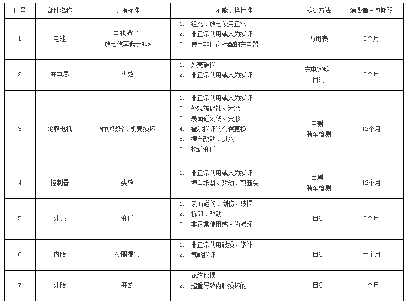

您是第 [17653] 位访客
首先感谢您选用上海不倒翁投资有限公司（以下简称IPS）的产品。 IPS是中国智能自平衡独轮车和两轮车研发和生产的领导者。为了您能更好地使用本公司产品，请阅读并遵守保养手册的维护说明。
一、服务宗旨：
本着“质量第一、用户至上”的观念，热情周到地全力满足顾客要求；
以“实事求是、高度负责”的态度分析、解决产品质量问题，做好产品保修工作！
服务保证：
1、反馈迅速、处理及时、服务周到、积极合作。对产品负责，让客户满意；
2、售后服务部随时解答客户使用、保养和维修方面的问题，设专人负责回复客户咨询；
3、售车时有专业技术人员提供现场免费培训，对驾车、保养、维修方面进行现场示范，直到熟练操作为止；
4、维护保养：保修期内，若该车任何配件发生自然损坏的，由我公司负责免费保修，若属人为损坏的由我公司负责维修，用户需支付相关损坏配件费用，不管是否在保修期内，我方均应确保在接到用户维修或配件要求时，在规定的时间内给予维修或答复。
二、IPS智能自平衡独轮车及两轮车保修范围：
1） IPS产品三包有效期自开具发货票据之日起计算，扣除因修理占用、无零配件待修延误的时间。三包有效期的最后一天为法定休假日的，以休假日的次日为三包有效期的最后一天。
2） 在三包有效期内，消费者按照本规定享受修理、更换、退货的权利，修理、 换货、退货应当凭发货票据办理。消费者丢失发货票据的，将依据产品序列号显示的出厂日期作为保修起始日计算产品是否仍在三包有效期内。
3） 换货后，商品三包有效期自换货之日起重新计算。
4） 零部件保修时效

三、如产品在质量以外出现的问题导致电动车或零配件的损坏，如：不合理或无意识的使用、附件安装不当、改装、超载、事故、滥用或疏忽，都不在我公司的保修之列。属下列情况之一者，不享受“三包”权利，只实行有偿服务。
1）.超过规定期限的;
2）.试验、处理出售的车辆；
3）.由于用户未按本公司说明书要求使用、维护、保养者，譬如电池过放电，超载和不规范操作等；
4）.凡天灾人祸，因不可抗拒力或化学物质浸蚀影响而引起不良和损坏；
5）.使用中属于正常磨损的易损件、消耗品。如：指示灯类、保险丝、摩擦片、各种密封垫及橡胶件；
6）.未经我公司及特许维修站同意自行拆修、改装或送非我司指定的特许维修站修理的车辆不在保修范围内；
7）.无保修证或不能提供有效发票的车辆；
8）.由于使用非IPS生产、提供的纯正配件或附件，而引发的故障；
9）.因修车造成的各种间接费用（例：电话费、租车费、运费、误工费、在我公司指定站外修车费等）不予负担；
10）.对于使用劣质电池、电机所造成的非正常磨损或损坏；
11）.对机械性性能没有影响的感觉上的现象，如声音、振动、发热等。
12）.由于用户对电池充电不当，自行改装或增加电气元件而造成的损坏。